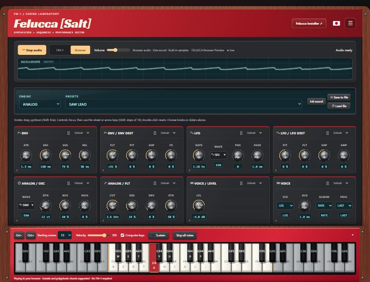

Expressive playing
37 velocity-sensitive keys, sustain pedal, pitch and modulation controls, and two pad banks.
Play Felucca on the SMK-37 Pro. Shape four tracks, build a sequence, and save your next idea on the keyboard or in Studio.
Test12 installed over normal USB, restarted successfully, and retained the saved project on the test device. This local preview is not a public firmware release.

37 velocity-sensitive keys, sustain pedal, pitch and modulation controls, and two pad banks.
Four tracks, step editing, recording, illuminated controls, and eight mapped encoders.
Four project slots save sounds, sequences, and settings. The latest save returns at startup with playback stopped.
Play from the browser and edit your SMK in both directions. Load and save device projects over normal USB.
Stage Red, Matrix, Vintage DX7, Model D, Vaporwave, and more. Light, dark, and high-contrast choices.
Bluetooth, TRS, sample uploads, and complete web backups are not enabled in this SMK build.
The new SMK updater uses the same cable-and-browser approach as the FM-1, with a separate SMK package and application-only write limits.
Loading local candidate information...
Stock firmware and Test10 need a one-time recovery-adapter installation of an updater-enabled build first. A website alone cannot add an updater to the firmware already running.
Close Studio and other MIDI apps first. Use Chrome or Edge. Keep USB and device power connected. Projects, calibration, and the bootloader are outside the write range. If power is lost during application programming, this first updater requires adapter recovery.
Although tested on device, this firmware remains a beta. Test12 installation, restart, and saved-project retention have passed on the test device. No warranty is provided; preserve your backups before experimenting.